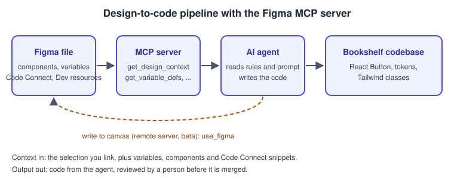
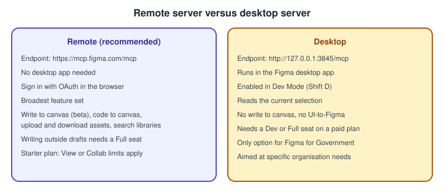
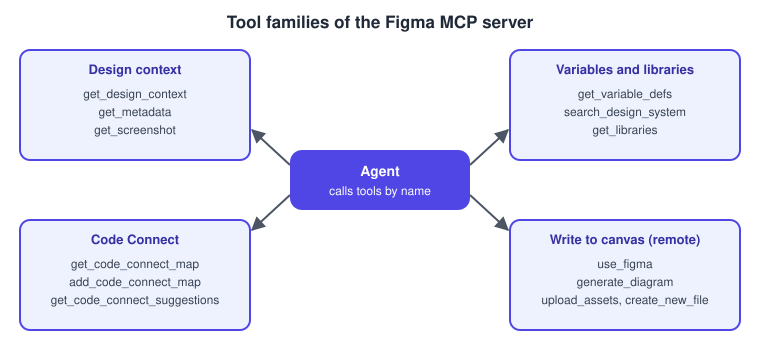
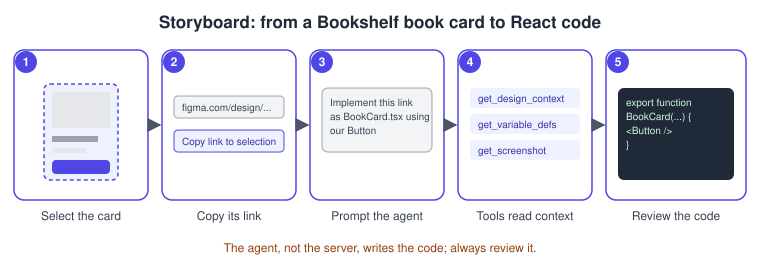
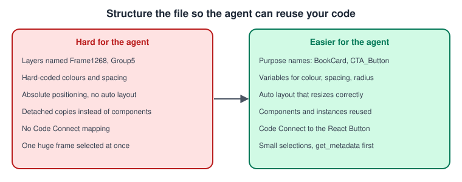

Figma MCP Server
|
This content was generated with the assistance of AI and should be verified against the official documentation before being relied on in production. |
This page was written on 2026-10-30 against the UI3 interface and the official Figma MCP server documentation. The server is a feature of the Figma developer platform rather than a screen of the editor. Reading design context works on the Starter, Professional, Education, Organization, Government and Enterprise plans, but the number of tool calls depends on the seat: View and Collab seats are limited to a small monthly allowance, while Full and Dev seats on a paid plan get daily and per-minute limits (see Seats, rate limits and access). Writing outside your own drafts needs a Full seat on the remote server. Status: the server itself is documented as generally available for reading design context, while write to canvas is in beta (free during the beta period, with usage-based pricing planned) and Figma Specs support is in open beta. Treat every beta statement as subject to change.
The running example is Bookshelf. A designer has built the book card in the Bookshelf Design System library, and a developer wants Claude Code to produce the matching React component that reuses the existing Button. This page covers only Figma’s server and its tools. For what MCP is, how hosts and servers talk and how to secure them, read Model Context Protocol, MCP architecture, Connecting hosts and MCP security. The mapping from components to code is described on Code Connect, and the inspection side on Dev Mode.
What the Figma MCP server is
The Figma MCP server is a Model Context Protocol server that connects AI agents to Figma. It does two things: it hands an agent structured design context (frames, components, layout, variables) taken from the layers you choose, so the agent can generate code from a design, and it lets an agent write native Figma content back to the canvas. The documented capabilities are:
-
write to the canvas in Figma Design, FigJam and Figma Slides (remote server only);
-
generate designs from the live UI of a web app or site (remote server, selected clients only);
-
generate code from selected frames;
-
extract design context such as variables, components and layout;
-
retrieve FigJam and Make resources;
-
keep generated code consistent with Code Connect;
-
read and update team specs with the
figma-specskill (open beta), see Figma Specs.
The server does not turn a design into finished code by itself. It supplies context; your agent decides how to adapt the layout and writes the code, and it knows your conventions only through Code Connect, variables, rules and the prompt you write. Output quality therefore depends on the context, the model and the clarity of the prompt.

Remote versus desktop server
There are two servers. The remote server is recommended: it is hosted by Figma at https://mcp.figma.com/mcp, does not need the desktop app and has the broadest feature set. The desktop server runs locally through the Figma desktop app at http://127.0.0.1:3845/mcp and is documented as meant for specific organisation and enterprise needs. Figma for Government supports only the desktop server.

| Aspect | Remote server | Desktop server |
|---|---|---|
Endpoint |
||
Needs the desktop app |
No |
Yes, kept up to date |
Sign-in |
Figma account, browser authorisation on first connection |
Uses the signed-in desktop app; enabled in Dev Mode |
Write to canvas, code to canvas, UI to Figma |
Yes (write to canvas is in beta) |
No |
Seat and plan |
Any seat can read within its rate limits; writing outside drafts needs a Full seat |
Dev or Full seat on a Professional, Education, Organization, Government or Enterprise plan |
Selection |
Paste a link to a frame or layer |
Link, or the current selection in the app |
Clients |
Clients listed in the Figma MCP catalog |
Claude Code, Cursor and VS Code are listed |
Pick the remote server unless your organisation requires the desktop one. Only clients in the Figma MCP catalog can connect to the remote server.
Setup
A client is any MCP host. Install through Figma’s plugin where one exists, because plugin installs include Figma’s skills and manual setups do not. Generic MCP host configuration is explained on Connecting hosts; only the Figma values are given here. All examples use the remote server and contain no secrets: authorisation happens in the browser and the token stays with the client.
Claude Code
-
Install the plugin (recommended):
claude plugin install figma@claude-plugins-official. -
Restart Claude Code, type
/plugin, open the Installed tab, selectfigmaand press Enter. -
Press Enter again and choose Allow access in the browser.
Manual alternative, which installs no skills:
claude mcp add --transport http figma https://mcp.figma.com/mcp
# add --scope user to make the server available in all projectsStart a new session, type /mcp, select figma, choose Authenticate and then Allow access. Type /mcp again to confirm the connection. If plugin installation fails, your organisation may have blocked it; ask your Claude administrator or use the manual method.
VS Code
-
Open the command palette and run MCP: Open User Configuration (all projects) or MCP: Open Workspace Folder Configuration.
-
Paste the configuration below into
mcp.jsonand save. -
Click Start above the Figma server name, then Allow access.
{
"inputs": [],
"servers": {
"figma": {
"url": "https://mcp.figma.com/mcp",
"type": "http"
}
}
}The documentation also offers a one-click install link, and advises installing the Figma plugin for GitHub Copilot for more reliable results because it includes the skills. Editor-side features such as inspecting from VS Code are on Desktop, Mobile and VS Code.
Cursor
-
Open the command palette, search for Open chat, enter
/add-plugin figmaand choose Add Plugin. -
In Cursor Settings, open Tools & MCP, and under Installed MCP Servers click Connect next to Figma.
-
Click Allow access.
If you configure it by hand, add a custom MCP server under Tools & MCP, save, and click Connect:
{
"mcpServers": {
"figma": {
"url": "https://mcp.figma.com/mcp"
}
}
}Desktop server
-
In the Figma desktop app, open a Design file.
-
With nothing selected, switch to Dev Mode with the toolbar toggle or Shift D.
-
In the MCP server section of the right sidebar, click Enable desktop MCP server. A confirmation shows that it is running.
-
Point your client at the local URL, for example in Claude Code:
claude mcp add --transport http figma-desktop http://127.0.0.1:3845/mcp, then restart and check/mcp. -
To verify in VS Code, open Chat in Agent mode and type
#get_design_context.
Other clients (Codex, Xcode 27 beta, Gemini CLI and any HTTP-capable MCP host) are covered in the same installation guide. Your client will not open Figma links by itself: right-click a frame or layer, choose Copy link to selection and paste the link into the prompt so the server can find the node.
How a request flows
Tools
The tools are listed in the official tools and prompts page, which is the reference to check because Figma adds tools often. Availability differs between the servers.

Design context and variables
| Tool | What it does | Servers |
|---|---|---|
|
Design context and code for a layer or selection; defaults to React and Tailwind, and takes |
Both |
|
Lightweight XML outline of a selection or, without a node, the top-level pages; use it first on large designs |
Both |
|
Screenshot of the selection, returned as a URL or as base64 when requested |
Both |
|
Variables and styles used in the selection |
Both |
|
Searches libraries for components, variables and styles |
Remote |
|
Lists added and available libraries |
Remote |
|
Converts FigJam diagrams to XML with screenshots |
Both |
|
Keyframe animation data and snippets, used after |
Both |
|
Exports and original images, up to 20 nodes per call |
Remote |
|
Your identity, plans and seats; useful to debug permission errors |
Remote |
Code Connect
When a frame contains components connected with Code Connect, the server wraps each in a CodeConnectSnippet marker that can carry design properties, imports, a component snippet and custom instructions. With the Code Connect CLI the import and snippet come from your Code Connect file; with the UI they are generated from the component name and properties. The tools are get_code_connect_map, add_code_connect_map, get_code_connect_suggestions, send_code_connect_mappings and, on the remote server, get_context_for_code_connect. For multi-framework components the desktop server uses the connection selected in Dev Mode and the remote server uses clientFrameworks. On Professional plans only connections for the active library and framework are returned.
Write to canvas
Write to canvas lets an agent create and edit frames, components, variants, variables and auto layout in Figma Design, FigJam and Slides, using your design system. It requires the remote server, a Professional, Education, Organization or Enterprise plan, edit access to the file and a supported client. The agent runs code through the Plugin API with use_figma; other write tools include create_new_file, generate_diagram (FigJam), upload_assets (up to 60 files, 10 MB each), generate_image (uses AI credits), html_to_figma, generate_figma_design and send_code_to_figma. Limits documented during the beta: each tool call returns up to 20 KB, use_figma cannot add images on its own, importing components with images or videos is not supported yet, fonts must be uploaded to your Figma account, and components must be published before Code Connect mappings can be completed. See Plans, Seats and AI Credits for credits.
Prompts, resources and other tools
The server also exposes the create_design_system_rules prompt, which drafts a rules file for your codebase (not every client supports MCP prompts), tools for generative plugins and shaders, Weave tools that need a separate paid Weave account and credits, and a way to bring Make context to an agent. Figma Make itself is a separate product.
Skills
Skills are pre-built instructions that teach an agent which tools to call, in what order and how to apply the results. They add workflow, not capability. The Figma help centre lists, among others: figma-use (write editable content to Design files), figma-use-figjam, figma-use-slides, figma-swiftui, figma-code-connect, figma-create-new-file, figma-generate-diagram, figma-code-workflows, and figma-spec (open beta). Some sample skills build a library from a codebase or assemble screens from design system components. Plugin installs (Claude Code, Cursor, Codex and others) include the skills; otherwise download them from the figma/mcp-server-guide repository and have your agent unzip them into the folder your tool expects. Installing skills first is recommended if you plan to write to the canvas. You can also write your own: see the "Create skills for the Figma MCP server" page of the developer docs. Skill names change, so confirm them in your client after installing.
Seats, rate limits and access
| Seat | Starter | Professional | Organization | Enterprise |
|---|---|---|---|---|
View, Collab |
20 per month |
20 per month |
20 per month |
20 per month |
Full, Dev |
None |
200 per day, 10 per minute |
200 per day, 15 per minute |
600 per day, 20 per minute |
Education plans match Full and Dev seats on Professional. Per-minute limits apply in addition to daily or monthly ones, and Figma may change them at any time, so re-check the official page. Tools that read data from Figma count; tools that write to files (including add_code_connect_map, create_new_file, generate_figma_design and whoami) are exempt, and actions that use AI credits are metered separately. You can only use the server with files you already have access to. On a permission error, confirm the link is to a Design, FigJam or Make file, ask the agent to run whoami to see the account and seat, and confirm the account belongs to the plan that owns the file. Enterprise organisations can use Okta Cross App Access with Claude so members need not sign in to Figma separately.
Procedure: build the Bookshelf book card in React

-
Connect Claude Code to the remote server as described above and confirm it with
/mcp. -
In Figma, select the Book card frame (it should use the
Buttoncomponent connected with Code Connect). -
Right-click it and choose Copy link to selection.
-
In Claude Code, paste the link and write a specific prompt: "Implement this frame as src/components/BookCard.tsx with React and Tailwind, reuse our Button and the tokens in src/styles/tokens.css."
-
Let the agent call
get_design_contextandget_variable_defs; approve the tool calls when the client asks. -
Review the diff. Check that the
Buttonimport comes from your codebase, that colours use tokens and that spacing matches auto layout. -
If the result is off, refine the file structure, the prompt or the rules rather than hand-fixing every time.
Procedure: let the agent add a screen to the canvas
-
Duplicate the Bookshelf file into a draft; write to canvas is in beta, so keep a backup.
-
Install the Figma plugin so the
figma-useskill is available. -
Copy a link to the file or to the target page and paste it in the prompt: "Using the Bookshelf Design System library, add a Review form screen to this page with the Input and Button components."
-
Let the agent inspect the file, then review the new frames in Figma and keep refining in the same conversation.
-
Break large changes into steps and name the libraries, components, variables or modes to use.
Best practices

-
Use components for anything that repeats, and connect them to code with Code Connect, the most effective way to make the agent reuse real components.
-
Use variables for spacing, colour, radius and typography (see Variables, Collections and Modes).
-
Name layers and components by purpose, use auto layout, add annotations and add dev resources in Dev Mode so related docs, code or tickets reach the agent.
-
Prompt like a briefing for a teammate: name the framework or styling system, the target file, the layout system, and ask to modify existing files when that is what you want.
-
Select small sections. For a big design have the agent call
get_metadatafirst and request context only for the parts it needs. -
Write project rules once: add them to
CLAUDE.mdin Claude Code or to a file in.cursor/rulesin Cursor. Thecreate_design_system_rulesprompt can draft them. See Prompting coding assistants and Components and props for the code side.
Security
The server only exposes files your account can already open, and sign-in is an OAuth-style browser authorisation, so no token needs to be pasted into a configuration file. Beyond that, apply the general MCP guidance of MCP security and MCP authorization:
-
Your selection decides what design data reaches the agent and its model provider; do not link confidential files into an agent your organisation has not approved.
-
Treat text in design files (layer names, comments, annotations) as untrusted input to the agent, since it can contain instructions.
-
Approve write calls deliberately, work on a duplicate while write to canvas is in beta, and review all generated code before merging.
-
The desktop server listens on
127.0.0.1, which is local to your machine, but still enable it only when needed. -
Organisations can restrict plugin installation and use Enterprise sign-in; ask your administrator before working around a blocked install.
Figma’s MCP pages do not describe data-handling in detail, so check Figma’s security page for retention and training policies.
Troubleshooting
-
Tools not loading, slow or stuck, 500 errors, images that stop loading, and "I asked for variables but got code" each have an entry in the developer docs Q&A; most slow cases come from selecting a very large frame.
-
Always returning React and Tailwind is the default of
get_design_context; state your framework in the prompt or rules. -
Permission errors: run
whoami, then check the plan that owns the file.
Where older guides are outdated
The MCP server post-dates the older guides: the mid-2025 book predates it, and the earlier books cover only Inspect or the first Dev Mode. The Inspect tab with CSS, iOS and Android snippets was replaced by Dev Mode, a paid Dev or Full seat feature since 2024-01-31, and Dev Mode now includes statuses, focus view, compare changes, annotations, Code Connect, Figma for VS Code and the MCP server. Source: Figma release notes